Sanjiv S. Jha
AI research engineer · PhD in AI & Ubiquitous Computing, University of St.Gallen
About
I turn AI research into working systems.
AI research engineer with 6+ years across applied AI research, software engineering and freelance technology consulting. I translate business and client needs into scalable AI solutions, work with technical and non-technical stakeholders alike, and deliver end-to-end systems from prototype to production.
- Generative AI
- Explainable AI
- Privacy-aware AI
- Multimodal AI
- Business & requirements analysis. Turning client and business needs into AI and multimodal-data use cases and solution designs, with cross-functional stakeholders.
- AI & machine learning. LLMs, RAG, tool calling, prompt engineering and LangChain; computer vision; explainable AI; PyTorch and scikit-learn.
- Software & cloud delivery. Python, FastAPI, TypeScript, Docker, Google Cloud, Microsoft Azure and Vertex AI, from prototype to production-ready.
- Trustworthy by design. Local-first and on-device models, guardrails such as Kavach, and explanations users can act on.
- Communication & collaboration. Client-facing delivery, 10+ students and junior colleagues mentored, complex AI explained to diverse audiences.
Featured
30 Ideas · 30 Days
One AI app a day for a month: 29 working prototypes, each with a write-up.
- Swift
- TypeScript
- Go
- Python
Kavach
Local security guard for AI coding agents: blocks leaked secrets and prompt injection.
- Go
- Local LLM
- Agent hooks
Drishya
Turns research papers into narrated, cited video podcasts with grounded Q&A.
- FastAPI
- React
- Manim
- RAG
Saathi
An audio companion that narrates where you walk, without ever storing your location.
- Swift 6
- On-device LLM
- HealthKit
Prod Preview
Turns cloud proofs-of-concept into a plain-language scorecard for stakeholder sign-off.
- TypeScript
- Docker
- GCP
ComplianceCopilot
Ask questions of compliance PDFs with local models and vector search; nothing leaves the machine.
- FastAPI
- React
- Ollama
- Chroma
ACES
Actionable, counterfactual explanations for smart environments from sensors and knowledge graphs.
- Python
- SPARQL
- GraphDB
Proactive Scene Understanding
A digital companion that combines user profiles with scene relationships to assist before being asked; validated on smart-home automation.
- Python
- OpenCV
- Scene graphs
- Context-aware AI
Experience
- AI
Freelance AI Engineer & Personal R&D
Self-employed · Konstanz, Germany · Oct 2025 – present- Built a local-first data anonymisation system that redacts sensitive data on-device before any cloud use, for GDPR-sensitive client workflows (freelance engagement, Oct 2025 – Jan 2026).
- Architected a multi-stage on-device/cloud LLM pipeline with strict guardrails and Airflow orchestration; delivered a production-ready web service and UI.
- Continued the project independently (Feb – May 2026) to explore further tooling beyond the original client scope.
- Ran the 30 Ideas · 30 Days challenge: 29 AI prototypes in 30 days.
- Since September 2026: developing and implementing personas for a digital product-marketing survey.
- Python
- FastAPI
- TypeScript
- ChromaDB
- Airflow
- Ollama
- LangChain
- LLM-as-a-Judge
- HSG
Applied AI Research Assistant
University of St.Gallen · St.Gallen, Switzerland · Sep 2019 – May 2025Researched and implemented AI methods and systems; mentored and supervised 10+ students.
2024–25The design space of automatic object identification systems
A formal model and validated framework for real-time, dynamic selection of discriminative object characteristics, improving multi-agent communication.
2024–25Multimodal question answering
Led the architecture of an assistant combining video, voice, human activity and sensor data for scene understanding in smart industrial environments; +12% accuracy over zero-shot LLM baselines.
2023–24Proactive scene understanding
A context-aware system using user profiles and scene relationships to assist proactively; a new digital-companion architecture, validated on smart-home automation.
2021–22Actionable explanations (ACES)
A counterfactual XAI framework and correlation-based explanation technique from semantic technologies and sensor data, for transparent cyber-physical systems.
- Python
- SPARQL
- OpenCV
- GraphDB
- PyTorch
- scikit-learn
- Prompt engineering
- EQ
Software Developer
Equidato Technologies · Baden, Switzerland · Apr 2018 – Mar 2019Built blockchain transaction modules and REST APIs, enabling seamless client integration and reducing enterprise onboarding effort. JavaScript, C#, Node.js, Node-RED.
- ACN
SAP UI5 Application Developer
Accenture AG · Zurich, Switzerland · Aug 2016 – Sep 2016Built a customer onboarding app that automates data entry, significantly reducing manual onboarding work at sales fronts. SAP Fiori UI5, ABAP, SAP ECC.
- AP
Software Trainer
Aptech Computer Education · Mumbai, India · Jul 2014 – Aug 2015Taught project-based courses in C#, Python, C++, HTML and mobile development; wrote course content.
- HW
Co-founder & Technical Lead
HelloWelt Technologies · Mumbai, India · Jan 2013 – Aug 2015Co-founded and built a 3D-printing marketplace where sellers offer custom 3D printers and products; led full-stack development and product strategy. WordPress, JavaScript, MySQL, Magento.
The road so far

← Swipe to see the whole map →
Where each role and degree happened, with the dates of that role, not of the stay.
Education
- HSG
PhD, Computer Science
University of St.Gallen · Feb 2020 – Sep 2025AI & ubiquitous computing: explainable, privacy-aware and ambient AI.
- UZH
M.Sc. Computer Science
University of Zurich · Sep 2015 – Apr 2018 - MU
B.E. Computer Engineering
University of Mumbai · Jul 2007 – Jun 2012
Service & recognition
- Programme committee, 37th IEEE ICTAI, 2025
- Programme committee, Mensch und Computer, 2024
- Programme committee, 11th International Conference on the Internet of Things, 2021
- 7 peer-reviewed papers on ubiquitous and IoT systems with applied AI/ML (Scholar)
- C#.NET application framework developer certification, 2012
Skills
- LLMs
- RAG
- Tool calling
- Prompt engineering
- LangChain
- LangGraph
- LLM-as-a-Judge
- PyTorch
- scikit-learn
- OpenCV
- Computer vision
- XAI
- Python
- TypeScript
- JavaScript
- C#
- Swift
- Go
- Docker
- Google Cloud
- Vertex AI
- Microsoft Azure
- FastAPI
- Airflow
- Ollama
- Git
- SQL
- MongoDB
- ChromaDB
- GraphDB
- SPARQL
- Generative AI
- Explainable AI
- Computer vision
- IoT
- Machine learning
- English · C2
- German · B2
- Hindi · native
- Painting
- Reading
- Event coordination
- Travelling